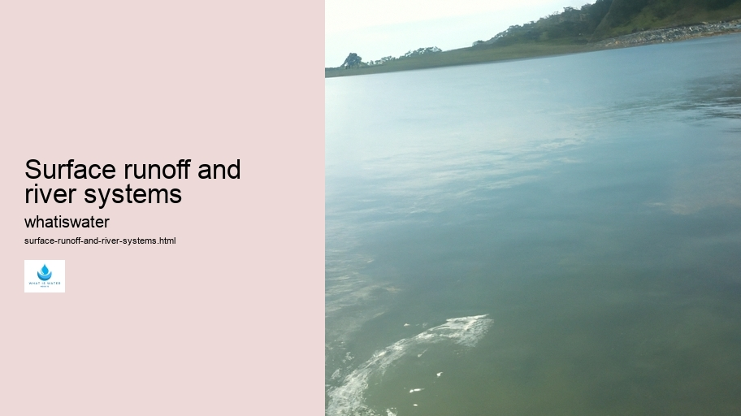

Hydrological Cycle
Hydrological Cycle
Evaporation and transpiration
Condensation and cloud formation
Precipitation and rain patterns
Surface runoff and river systems
Groundwater flow and aquifers
Snowmelt and glacial processes
Water storage in oceans lakes and reservoirs
Soil moisture and infiltration
Water balance and budgeting
Human impact on the hydrological cycle
Marine Ecosystems
Marine Ecosystems
Coral reefs and their biodiversity
Mangrove forests as coastal protectors
Ocean currents and climate regulation
Deepsea habitats and extremophiles
Intertidal zones and estuarine ecosystems
Marine food webs and trophic levels
Freshwater Ecosystems
Freshwater Ecosystems
Conservation efforts for marine species
Marine biogeochemical cycles
Impact of global warming on oceans
Water Resource Management
Water Resource Management
Rivers streams and creeks ecosystems
Lakes ponds wetlands habitats
Biodiversity in freshwater environments
Aquatic plants role in oxygenation
Freshwater fish species diversity
Invasive species impact on freshwater systems
Pollution threats to freshwater sources
Conservation strategies for freshwater biomes
Role of wetlands in flood control
Importance of riparian buffers
Cultural Significance of Water
Cultural Significance of Water
Sustainable water use practices
Desalination technologies for fresh water supply
Wastewater treatment processes
Rainwater harvesting techniques
Management of water during drought conditions
Transboundary water resource politics
Infrastructure for water distribution
Agricultural irrigation efficiency
Urban water demand management
Impact of climate change on water resources
About Us
Contact Us

Surface runoff and river systems
Water Rights
Surface runoff signifies the water flow that occurs when excess rainwater, meltwater, or other sources can't infiltrate the ground.
Surface runoff and river systems - Water Rights
Thermal Pollution
Hydroponics
Water Treatment
Water Conservation
Wetlands
This phenomenon is a critical component of the hydrological cycle.
Groundwater flow and aquifers
. When precipitation hits the earth's surface, several outcomes are possible: it can evaporate back into the atmosphere; be absorbed by soil and plants; or become surface runoff.
Infiltration rates of the ground dictate how much water becomes runoff. Soil composition, vegetation cover, topography, and rainfall intensity all play roles in this process.
Surface runoff and river systems - Aquatic Ecosystems
Groundwater
Aquatic Ecosystems
Bottled Water
Thermal Pollution
Impermeable surfaces like concrete exacerbate runoff by preventing absorption.
As this water travels over land, it gathers in rivulets which merge to form streams and rivers—vital components of river systems. These systems serve as conduits for collected rainwater to journey towards larger bodies of water such as lakes or oceans.
The interconnected networks that comprise river systems are complex ecological corridors sustaining diverse life forms.
Surface runoff and river systems - Ocean Conservation
Bottled Water
Thermal Pollution
Hydroponics
They facilitate sediment transport, shape landscapes through erosion and deposition, and deliver nutrients to aquatic ecosystems.
Humans significantly impact both surface runoff and river systems.
Surface runoff and river systems - Bottled Water
Aquatic Ecosystems
Bottled Water
Thermal Pollution
Urbanization increases impermeable surfaces leading to more runoff and potential flooding events. Furthermore, pollution from various sources often finds its way into these waters affecting both quality and biodiversity.
Surface runoff and river systems - Water Rights
Ocean Conservation
Groundwater
Aquatic Ecosystems
Bottled Water
Mitigation strategies include implementing green infrastructure like rain gardens which absorb stormwater or restoring wetlands that naturally filter pollutants while reducing overflow volumes.
River management also involves careful monitoring of water levels using dams or levees to control flow during extreme weather patterns ensuring communities remain safeguarded against floods while preserving natural habitats downstream.
Conclusively, understanding surface runoff dynamics in conjunction with responsible river system stewardship is crucial for environmental balance and resilience against climate variability—a testament to our intertwined existence with nature’s intricate cycles.
Hydrological Cycle
Check our other pages :
Water storage in oceans lakes and reservoirs
Rainwater harvesting techniques
Transboundary water resource politics
Impact of global warming on oceans
Frequently Asked Questions
What is surface runoff and how does it affect river systems?
Surface runoff is the flow of water that occurs when excess rainwater, meltwater, or other sources cant infiltrate the ground and instead flows over the land. This can lead to erosion, transport of nutrients and pollutants into rivers, and increased sedimentation in river systems. It affects the quality and quantity of water in rivers, impacting ecosystems and human water supplies.
How do human activities influence surface runoff and consequently river systems?
Human activities such as deforestation, urbanization, agriculture, and construction can significantly alter natural surface runoff patterns. These changes often increase the volume and speed of runoff, leading to more severe erosion, pollution from agricultural run-off or urban areas entering rivers more rapidly, altered river flows, flooding risks, and reduced groundwater recharge. Managing land use and implementing green infrastructure can help mitigate these impacts.